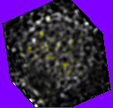

The algorithm is the classic one where rays are cast through the volumetric data and the image intensities are accumulated according to various schemes. The image below shows a ray tracing using Bresenham's 3D line drawing algorithm to quickly identify voxels whose values are approximately on the ray. The data set is an x-ray crystallography image of the superoxide dismutase molecule. The trade-off is speed of rendering versus quality of final image.

|
The image below is a ray tracing where the image intensities along a ray are an integration assuming trilinear interpolation. The integration values are mapped to gray scale intensity.
The image below is a ray tracing where the image intensities along a ray are an integration assuming trilinear interpolation as in the previous example, but voxels whose values are larger than a specified threshold are colored with shades of yellow rather than gray scale.
|  |
The image below is a ray tracing of two images (registered ones in the medical imaging application) where the image intensities along a ray are an integration assuming trilinear interpolation. The images are alpha blended to allow a user to see two different image modalities superimposed in the same region. The example is artificial, the molecule image and an image with a sphere.